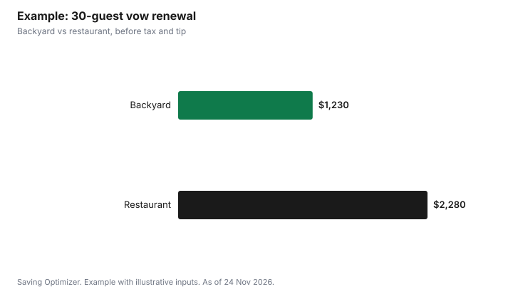

Weddings · Canada
Vow Renewals: A Canadian Cost Guide

A vow renewal in Canada can cost a few hundred dollars or several thousand, depending on the guest list and food. You don't need a marriage licence in Ontario, because you're already married. Officiants in Ontario charge about $275 to $500 for a vow renewal ceremony. Keep the guest list small, host at home or in a park, and the whole day can cost less than many wedding receptions' bar bills.
Key takeaways
- No marriage licence is needed for a vow renewal in Ontario.
- Ontario officiant fees for vow renewals: $275 to $500 (checked 24 Nov 2026).
- A municipal officiant can be cheaper: South Stormont lists a vow renewal at $300.
- Food and venue drive the budget, not the ceremony.
- Example: 30 guests in a backyard, $1,230; the same group at a restaurant, $2,280.
Do you need a licence?
No, in Ontario. The Marriage Act says it does not apply to a ceremony between two people who are already married to each other, so there's nothing to file and nothing to sign. Other provinces treat a renewal the same way in practice: it's a celebration, not a legal event. Bring your original marriage certificate only if you want it in the photos.
Officiant fees
| Officiant | Price | Notes |
|---|---|---|
| The Universal Love Project | $275 | Consultation and a 10 to 25 minute ceremony |
| Township of South Stormont | $300 | Municipal officiant |
| Ottawa Officiants | $450 | Travel within 30 km, keepsake certificate |
| iMarryU (Durham and area) | $495 | All inclusive, 60 km return travel |
| Enduring Promises | $500 plus HST | Toronto, Ottawa, Kitchener-Waterloo |
You can also ask a friend or family member to lead the ceremony. Since it isn't a legal marriage, they don't need to be licensed.
Where the money goes
- Food: potluck, catered trays or a restaurant meal.
- Venue: free at home or in a park; check park permits for larger groups.
- Clothes: wear something you already own, or something new.
- Photos: an hour of photography often covers a short ceremony.
- Rings: some couples upgrade or add a band; it's optional.
Plan: an example
Example: 30 guests. In a backyard: officiant $300, catered food at an example $25 a head ($750), cake $100 and flowers $80, $1,230 in total. At a restaurant: officiant $300 and a group dinner at $66 a head ($1,980) before tax and tip, $2,280 in total.

For more ways to keep a celebration small, see elopement package costs and backyard wedding costs and permits.
Sources
- Ontario, Marriage Act, R.S.O. 1990, c. M.3, checked 24 Nov 2026.
- The Universal Love Project, Vow Renewal, checked 24 Nov 2026.
- Township of South Stormont, Marriage Licences and Civil Ceremonies, checked 24 Nov 2026.
- Ottawa Officiants, Plans and Pricing, checked 24 Nov 2026.
- iMarryU, Vow Renewal Ceremony, checked 24 Nov 2026.
- Enduring Promises, Renewal of Vows, checked 24 Nov 2026.
- The Keg, group dinner menus (Pioneer menu, $66 per person), checked 24 Nov 2026.
Frequently asked questions
Do you need a marriage licence to renew your vows in Ontario?
No. Ontario's Marriage Act does not apply to a ceremony between people who are already married to each other.
How much does an officiant charge for a vow renewal?
Ontario officiants listed $275 to $500 for vow renewals when checked on 24 Nov 2026.
Can a friend officiate our vow renewal?
Yes. A renewal isn't a legal marriage, so anyone you choose can lead it.
Is a vow renewal legally binding?
No. Your original marriage is the legal one; a renewal is a ceremony only.
How can we keep a vow renewal cheap?
Keep the guest list small, host at home or in a park, and choose simple food.
Researched and drafted with AI assistance and fact-checked against official Canadian sources. How we create content.
Note: Prices are examples from public price lists. Check with each officiant. Education only.